Project 3D-printen ATAG Benelux
Presentaties
Op de eerste dag van het thema project presenteerde alle bedrijven die meedoen aan deze module hun innovatieve vraagstukken waar zij hulp van studenten bij willen hebben. Het ging hierbij om diverse vraagstukken van een
ICT-achtergrond tot aan een bedrijfskundige achtergrond. Ook vertelde de bedrijven dat er in overleg veel mogelijk is. Dus wanneer je een andere kant wil onderzoeken binnen het desbetrefende vraagstuk, kan dat ook. Hier een kleine
terugblik op de presentaties:
Het eerste bedrijf was Innoveins. het bedrijf presenteerde een vraagstuk over de onkruidmachine waar de vorige lichting studenten een begin aan gemaakt heeft. De machine is bedoelt voor Agro/Hightech en er zal gewerkt worden
met de technologie Machine Learning.
Het tweede bedrijf was Pivotpark. Dit bedrijf had de opdracht om voor en aantal pharma start-ups een gezamelijke databron te maken waarin data gefilterd en gevisualiseerd werd, om vervolgens te verwerken tot informatie.
Het derde bedrijf was ATAG. Dit bedrijf kwam met de opdracgt om te kijken naar de mogelijkheden van het 3D-printen van serviceparts. Dit omdat zij een magazijn hebben met ruim 150.000 componenten van modellen die niet meer verkocht worden
maar waarvan de componenten nog steeds op voorraad gehouden moeten worden.
Het vierde bedrijf was NxP. NxP had de opdracht om te kijken naar de mogelijkheid van Realtime informatie op de werkplekken waar zij hun chips maken. De computers achter het systeem moeten de info generen en het doel is om deze info
bij de werknemers op de werkplekken te krijgen.
Het vijfde bedrijf was Modderkolk. Modderkolk kwam met de opdracht om te kijken naar de communicatie naar de klanten en de medewerkers toe. Zij willen ervoor zorgen dat alles wat besproken wordt en belangrijk is voor de medewerkers ook
daadwerkelijk bij de medewerker terecht komt.
Het zesde bedrijf was Kropman. Dit bedrijf kwam met de opdracht om te kijken welke mogelijkheden er zijn om de producten die zij maken in de werkplaats te kunnen volgen door middel van codes en tags. De andere opdracht die zij hadden ging over
de implementatie van een 3D-meetmethode in de productie (laserscan).
Het zevende bedrijf was het Internethuis. Dit bedrijf had een drietal opdrachten: Het robotiseren van de agrarische sector door middel van 5G robots, logistieke processen optimaliseren door het vastleggen van de hoeveelheid voeding in een silo en het
toepassen van satellieten bij IoT oplossingen.
Het achtste bedrijf was Icr3ate. Dit bedrijf kwam met de opdracht om te kijken naar de mogelijkheden van het produceren van low volume prototypes. Gericht op het samenwerken met andere bedrijven.
Het negende bedrijf was Be Informed. Deze opdracht ging over het ontwerpen van een Smart Production Cel met robots die onderdelen kan herkennen en daar een actie op verricht.
Het laatste bedrijf was Beside. Deze opdracht kwam voort uit de vraag welke data nodig is om de maakindustrie te optimaliseren en op welke manier dit het beste kan.
Eigen presentatie
Na alle presentaties van de bedrijven hadden Bram, Coen en ik voorkeur voor een tweetal bedrijven waar wij mee in gesprek waren gegaan. Dit waren Icr3ate en ATAG.
Icr3ate had een opdracht waarbij veel vrijheid mogelijk was, maar het was een relatief klein bedrijf. Door het karakter van de opdracht van ATAG (3D-printen) en naam van het bedrijf, is de keuze toch
op ATAG gevallen om voor te presenteren. Hierin hebben wij ervoor gekozen om een beeld te geven van onszelf, wat voor een studie we doen en onze manier van werken. Omdat ik de andere twee jongens zelf ook
nog niet heel goed kende, was het goed om een beeld te hebben van hun manier van werken. Wij doen namelijk alle drie de studie technische bedrijfskunde, alleen Bram en Coen doen hem in Enschede. We hebben er wel
over getwijfeld om niet met andere disciplines een groep te vormen. Alleen kwamen we erachter dat deze opdracht ons alle drie goed ligt en we allemaal goed zijn in een andere kant van de studie. De ene is redelijk
technisch, de ander meer economisch en de ander heeft weer meer verstand van verslaglegging. Voor onze presentatie: Klik hier!
Keuze bedrijf en opdracht
Na het presenteren was het wachten op de keuze van de bedrijven. Wij hebben direct na de presentaties contact gezocht met Jan van Os (Innovatie Manager ATAG Benelux) en hem gevraagd om zijn visitekaartje. Vervolgens hebben
ik hem via LinkedIn een connectieverzoek gestuurd. Tijdens de studentendag van ATAG hebben wij een gesprek met hem gehad over de verdere details en verwachtingen van het project. Wij waren enthousiast en volgens mij zag hij het
ook wel zitten! De opdracht over het 3D-printen van serviceonderdelen sprak mij heel erg aan omdat het een opkomende techniek is die veel voeten in aarde heeft in de productiewereld. Als TBK'er is het dan ook geen overbodige luxe om
er kennis over op te doen bij een bedrijf. Ook ATAG is een bedrijf wat mij erg aansprak vanwege de grootte het innovatieve karakter. Ook tijdens de studentendag werd mij duidelijk dat het bedrijf erg gericht is op een innovatief karakter.
Wij waren dus erg enthousiast om te beginnen! Hieronder een foto van de sfeer bij de studentendag:
Wat is ATAG voor een bedrijf?
Tijdens de presentatie en ht vervolggesprek heeft Jan van Os ons veel verteld over wat voor een bedrijf ATAG is en wat de aanleiding is van het onderzoek naar het 3D-printen van reserveonderdelen. ATAG is een keukenleverancier die bestaat uit een drietal merken: ATAG, Pelgrim en Etna. Ook geprijst in deze
volgorde van duur tot minder duur. Daarnaast heeft ATAG een wasmachine merk genaamd ASKO en zijn zij onderdeel van een multinational genaamd Hisense. De vestiging waar wij zitten is gelegen in Duiven. Op deze locatie vindt alleen opslag en distributie plaats. Productie gebeurt in Oost-Europa.
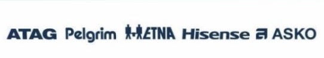
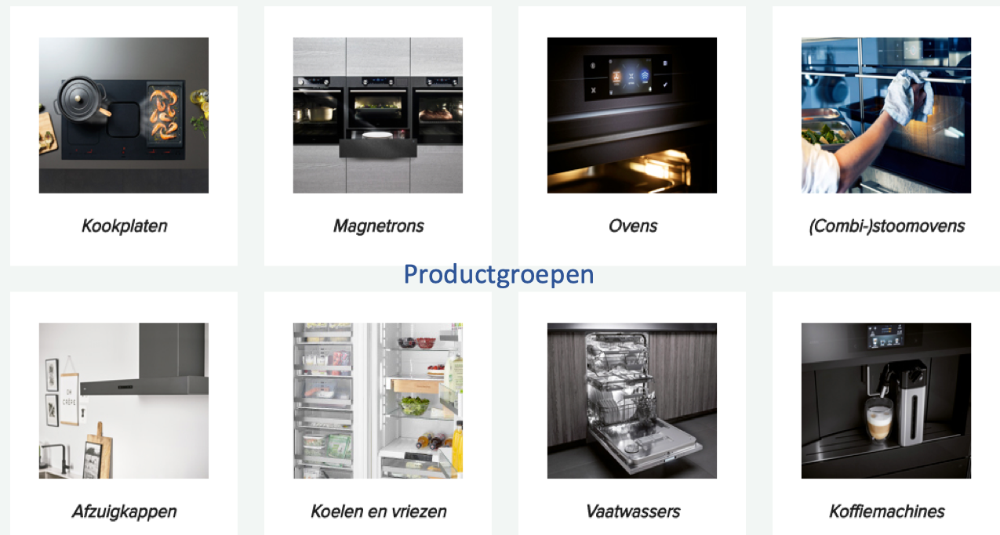
Wat was de aanleiding voor dit onderzoek?
De aanleiding van het onderzoek naar de mogelijkheden van 3D-printen van serviceonderdelen is dat ATAG kampt namelijk, net als vele andere bedrijven, met een grote hoeveelheid voorraad. Deze voorraad van reserveonderdelen wordt gehouden in een groot pand naast het traditionele pand van ATAG.
De voorraad van deze reserveonderdelen is ontstaan door de plicht die zij hebben om onderdelen van machines 10 jaar na stop van productie uit te kunnen leveren. Wanneer dit niet het geval is kost het veel geld om een nieuw model te plaatsen of een andere oplossing aan te bieden. De moederorganisatie Hisense heeft
ATAG de opdracht gegeven om de voorraad van deze onderdelen drastisch te minderen. Er worden grote hoeveelheden producten weggegooid, zonder een alternatieve oplossing te hebben. Vandaar dat ATAG een stap wil gaan maken richting 3D-printen, met aan ons de vraag: welke stappen moeten wij nemen?
Vooronderzoek
Om een goede aanpak voor ons project vast te leggen is het noodzakelijk om allereerst onze kennis te vergroten over het onderwerp 3D-printen en te kijken of er soortgelijke onderzoeken zijn gedaan. Het vooronderzoek wat wij gedaan hebben, is opgesplitst in een drietal groepen: kunststof 3D-printen, metaal 3D-printen en
relevante onderzoeken. Op basis van de theorie hebben wij een bepaalde aanpak geformuleerd. Er zijn namelijk veel bedrijven die de afgelopen jaren onderzoek gedaan hebben naar de mogelijkheden van 3D-printen. PwC heeft hier dan ook onderzoek op losgelaten en een stappenplan geformuleerd. Deze zit als volgt in elkaar:
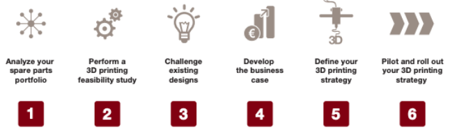
Aanpak van het onderzoek
Om bovenstaande manier hebben wij ons project dan ook proberen aan te pakken. ATAG heeft momenteel een magazijn van zo'n 25.000 verschillende soorten producten. Om tot een selecte groep te komen zal er allereerst gekeken moeten worden welke groepen er nog niet geprint kunnen worden. Vervolgens welke ontwerpen net geprint kunnen worden.
Uit de overgebleven groep zal steekproefgewijs een keuze moeten worden gemaakt voor een aantal producten waarmee getest zal gaan worden en de economische aantrekkelijkheid berekend gaan worden. Daarna moet er een strategie uitgerold worden, waarna er als laatst een pilot uitgerold moet worden om het in gang te zetten. Toch zit er veel
kennis en samenwerkingen verbonden aan dit project. Wij zouden ons moeten gaan richten op het zoeken van externe kennis en het kijken waar mogelijkheden zich voor kunnen doen. Voor ons plan van aanpak: Klik hier!
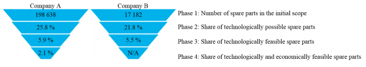
Afspraken met de groep
Omdat dit het eerste project is waar wij met elkaar samenwerken en de opdrachtgever geen goed beeld van ons heeft, is het belangrijk om duidelijke afspraken te maken. De onderlinge afspraken waren al vrij snel duidelijk. We werken 1 dag per week op locatie, delen een onderdeel op, maken deze thuis en lezen hem de volgende keer dat we elkaar zien door
en geven elkaar dan ook feedback. Aanwezigheid op de afgesproken dagen was natuurlijk noodzakelijk hierbij en het maken van je eigen stuk ook. De afspraken met de opdrachtgever verliepen ook soepel. Met Jan hebben wij afgesproken om minimaal 1 dag in de week op locatie te zijn in Duiven. Daarnaast hebben we tijd om andere bedrijven en partijen te bezoeken
die iets voor het project kunnen betekenen. De rollen binnen de groep zijn ook redelijk duidelijk. Zo zeggen we het allemaal wanneer we goede ideeën hebben en zijn we allemaal groepswerkers. Wel heeft de een eerder behoefte aan voor zichzelf werken dan de ander. Dit hebben wij verwerkt in een de team charter:
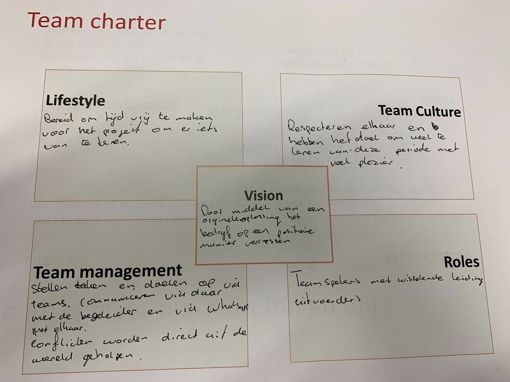
Werkwijze tijdens het project
De werkwijze tijdens ons project is het afwerken van onderstaande weekplanning op Scrum basis. Dagelijks maken wij een planning van activiteiten die aan het eind van de dag afgerond moeten zijn. Deze activiteiten worden opgeschreven en onderverdeeld. Vervolgens gaan we in korte sprints van een half uurtje aan de slag met het onderwerp. Voor we aan de nieuwe
activiteiten beginnen, kijken we allereerst naar de gemaakte stukken. Deze stukken lezen we door en we geven er feedback op. De feedback komt terug als activiteit op de planning.
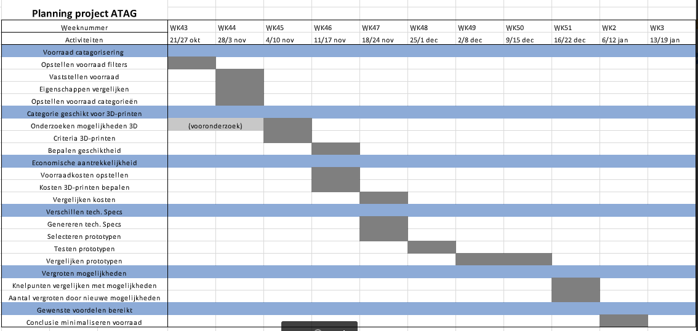
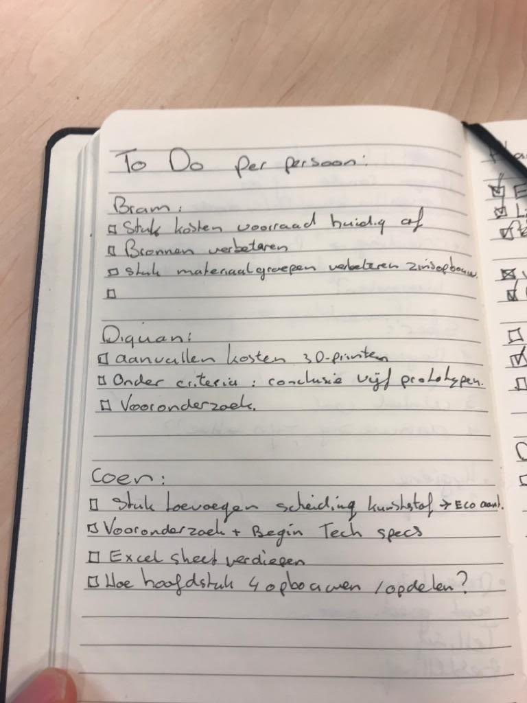
Eerste fase van het onderzoek
Nadat alle afspraken rond waren gingen we van start met ons project. De insteek was om van de 25.000 verschillende producten een goed beeld te krijgen welke categorieën potentie hadden om 3D-geprint te worden. Deze potentie zou gebasseerd worden op zowel technisch haalbaar, als economisch aantrekkelijk. De eerste stap om dit te kunnen doen was het inventariseren van de
voorraad en het huidige serviceproces zoals het er bij ATAG aantoe gaat. Dit hebben wij kunnen beschrijven door interviews met de afdeling en gesprekken met onze begeleider. Hieruit bleek gelijk welke knelpunten er zich voordoen binnen dit proces, die wellicht met 3D-printen verledentijd kunnen zijn. Het ging hierbij om de volgende knelpunten: beschikbaarheid, levertijden,
en bestelhoeveelheden. Vervolgens zijn wij in de productgroepen van serviceonderdelen gedoken om te kijken welke technisch haalbaar zijn volgens de huidige Stand der Techniek. Na gesprekken met K3D en veel theoretisch onderzoek is er een groep overgebleven waar wij ons specifiek op gericht hebben: de kunststoffen. Deze producten gaan in de apparatuur van ATAG relatief snel
stuk en zijn goedkoper om te 3D-printen. Uit een lijst met zo'n 1300 gebruikte serviceartikelen hebben wij een vijftal willekeurige producten gekozen om te kijken of het de gewenste resultaten op kan leveren. *Voor resultaten zie hoofstuk 1 tot en met 4 van het verslag.*
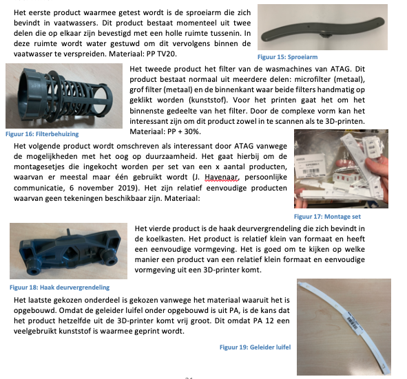
Middenfase van het onderzoek
In het volgende deel van het onderzoek zijn we gaan onderzoeken wanneer producten economisch aantrekkelijk zijn voor ATAG om 3D te printen. Dit is bij een hoge prijs per product, hoge MOQ, verouderde of niet beschikbare status, lange levertijden, lage afzet en hoge voorraadduur (zie hoofdstuk 5.1). Wanneer ATAG producten wil selecteren om te printen, wordt het aangeraden om dit
volgens deze criteria te doen. De volgende stap is het onderzoeken van de investeringsmogelijkheden. Deze mogelijkheden zijn terug te brengen op aanschaffen van een printer of uitbesteden van het 3D-printen. Toch zit er nog een fase voor. ATAG heeft namelijk geen tekeningen tot hun beschikking van zo'n 90% van de producten. Dit betekend dat een groot deel gescant moet worden.
Om kosten te besparen moeten goede afspraken gemaakt worden met een partij als Geopoints Houten die zich hierin heeft gespecialiseerd. Gekeken naar aanschaf/uitbesteden is het uitbesteden van 3D-printen momenteel het aantrekkelijkst vanwege de verwachte hoeveelheid en het gebrek aan kennis over de technologie binnen ATAG. De aanschaf van een professionele printer is om en nabij de €200.000,-.
Zie het hoofdverslag voor onze gebruikte casus bij Geopoints en Oceanz.
Vervolgens zijn wij gaan kijken naar het resultaat wat er uit de printer komt en wat er in theorie zou gebeuren onder bepaalde omstandigheden. Hieruit is gebleken dat alle materiaaleigenschappen relatief gelijk blijven tenzij ze voor een langere tijd(28 dagen) aan een watertemperatuur bloodgesteld worden. Dit kan worden opgelost door een ander materiaal te kiezen of nabewerking te verrichten.
Daarnaast zijn er ook nog geen normeringen rondom 3D-printen, dit kan in sommige gevallen nadelig zijn. Wel is gebleken dat veel producten binnen het portfolio van ATAG grote potentie vertonen op geprint te worden. Wij hebben het vaatwasser filter als voorbeeld genomen. Alle resultaten kunnen worden teruggelezen in het bijgevoegde verslag. Hier een foto van het filter:
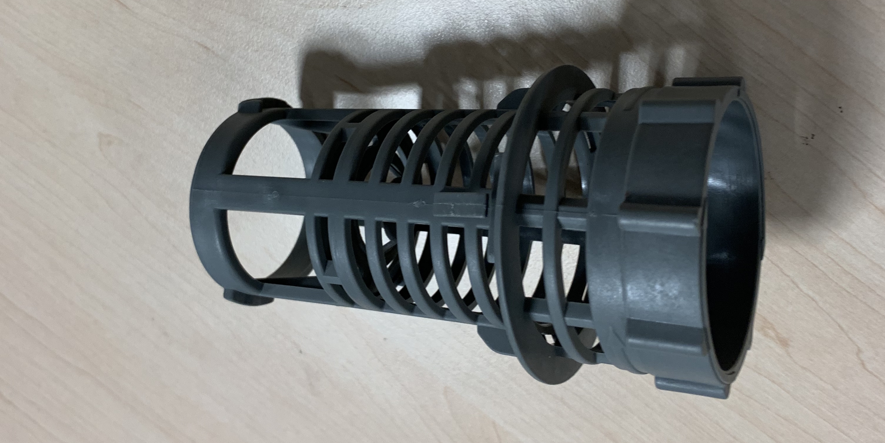
Van bovenstaand filter was geen tekening beschikbaar. Dit betekende dat hij in eerste instantie nog niet 3D-geprint kon worden. Na het zoeken van oplossingen zijn wij terecht gekomen bij Nico Velzel van Geopoints Houten. Ik heb hem een bericht gestuurd via LinkedIn om een afspraak met hem in te plannen om te kijken naar de mogelijkheden van het inscannen van dit filter. Hij was erg enthousiast
en was tot veel bereid. Zo heeft hij ons product ingescand en hebben wij hem gelinked aan ons project en ATAG. De prijs van dit scannen is normaliter rond de 250 euro voor een enkele opdracht. Naast printen heeft Nico ook veel kennis van het ontwerpen van producten volgens 3D-print principes en kan hij ATAG hier dus ook in ondersteunen. Vervolgens zijn wij gaan kijken naar mogelijkheden om het product te kunnen printen.
Hierbij zijn wij uitgekomen op Oceanz Ede. Ook hier hebben wij contact mee opgenomen. Frank van Oceanz was bereid om bij ons in Duiven langs te komen om de mogelijkheden te bespreken. uiteindelijk waren zij bereid het product te printen tegen een 50/50 prijs als eerste prototype. De totaalprijs was hier rond de 39 euro. Hier een aantal foto's van dit traject:
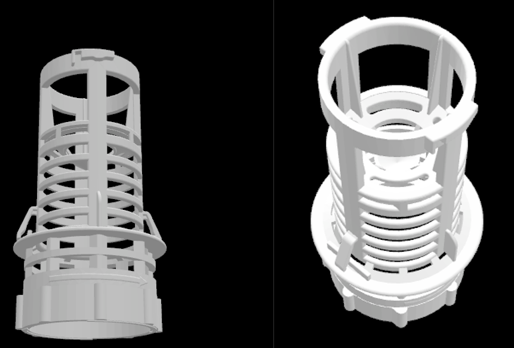
Afrondingsfase van het onderzoek
De laatste stap binnen het onderzoek is het uitzetten van een implementatietraject voor ATAG mochten zij de stap richting 3D-printen willen maken. Lees volgende kopje om meer te weten over de stappen die zij kunnen zetten. In de afrondingsfase hebben wij namelijk gekeken naar de verschillende mogelijkheden die er zijn en met de opgedane kennis hebben wij een traject uitgestippeld die voor ATAG het beste zou
zijn richtin het doel om 3D-printen te implementeren. Wat ons betreft een erg mooi doel en een erg mooi traject. Wij zijn benieuwd of het daadwerkelijk zo ver gaat komen!
Voor de rest hebben wij in de afrondingsfase veel contact opgenomen met bedrijven die ons hebben geholpen in deze periode. Zo hebben wij promotiemateriaal van Oceanz, Geopoints en K3D weten te krijgen om ons concept beter te kunnen promoten bij andere bedrijven. Ook zijn wij druk geweest met het maken van een presentatie om intern te presenteren en bij het seminar.
Onderzoeksresultaten
Na ons 14-weekse onderzoek hebben wij een aantal interessante resultaten bij elkaar verzameld. Het eerste onderdeel was het opstellen van voorraadcategorieën om de voorraad gemakkelijk te kunnen filteren. Dit zijn categorieeën als glas, elektronica, kunststof etc. Vervolgens hebben wij gekeken hoe de huidige stand der techniek ervoor staat en hebben de keuze voor kunststof gemaakt.
Vervolgens hebben wij gekeken welke stap daarna interessant is. Praktisch gezien kan namelijk bijna alles van kunststof geprint worden, alleen niet alles is economische interessant. Hiervoor hebben wij een aantal economische criteria opgesteld waaraan producten getoetst kunnen worden. Vervolgens kan er een BusinessCase opgemaakt worden of het voor een aantal gevallen interessant is.
Daarna kunnen/moeten er partners gezocht worden die bij de uitrol gaan helpen, voorbeelden hiervan zijn Geopoints, K3D en Oceanz. Hierbij is het proberen en uitrollen van de operatie een belangrijk punt om het te laten leven binnen de organisatie. Lees ons verslag voor alle informatie!
Conlusie
Concluderend kan gesteld worden dat 3D-printen veel potentie kan hebben voor ATAG wanneer zij de juiste stappen ondernemen. Deze stappen hebben wij hierboven beschreven. Voor de volledige conclusie, zie verslag.
Aanbevelingen
Met het onderzoek wat wij verricht hebben kan een mooie stap gezet worden. Toch is vervolgonderzoek hiervoor wel noodzakelijk. Dit onderzoek kan gezien worden als een eerste stap richting 3D-printen. Wanneer ATAG er een intern project van maakt en er effort achter zet, zal dit snel uitrollen over de gehele organisatie en zullen de knelpunten snel verdwijnen.
Lees in ons verslag de aanbevelingen die wij ATAG geven!
Reflectie op de opdracht
Wanneer ik terugkijk op de opdracht ben ik heel erg positief. Zo'n innovatieve technologie bij zo'n mooi bedrijf! Een groot succes wat mij betreft. Ook onze aanpak was achteraf erg effectief. We hebben namelijk veel gebruikgemaakt van externe kennis waar nodig en hebben mooie connecties gelegd in het veld. Hierdoor is zowel door onszelf als door ATAG veel geleerd.
Ook voor de toekomst denk ik dat wij voor ATAG een mooi doel hebben neergelegd die zij stapsgewijs na kunnen lopen in projectvorm. Wanneer dit project goed wordt uitgevoerd en draagvlak wordt gecreerd kunnen de benoemde voordelen worden behaald. Een erg mooie opdracht met erg veel mooie leermomenten!
Reflectie op het groepswerk
De groep (Bram, Coen & ik) waarmee wij dit project deden was erg goed op elkaar ingespeeld. We hebben voor lol gehad, maar ook kei hard gewerkt aan dit project. Dit was puur omdat wij wilde laten zien dat we in een korte tijd, met relatief weinig contactmomenten een mooi resultaat neer konden zetten. Doordat we allemaal voor ditzelfde doel gingen waren er soms natuurlijk
wel wat onenigheden over de kwaliteit van bepaalde stukken, maar buiten dat was het een erg prettige samenwerking. In deze periode hebben wij denk ik veel van elkaar geleerd en hebben we elkaar naar een hoger niveau proberen te tillen. Ook de combinatie van drie TBK studenten was niet storend. Juist omdat we allemaal andere inzichten hebben vullen we elkaar goed aan, maar is
het project maar bedrijfskundig gestuurd dan technisch. Daarom zijn de vervolgopdrachten ook iets technischer en specifieker, maar dat was vooraf ook afgesproken.
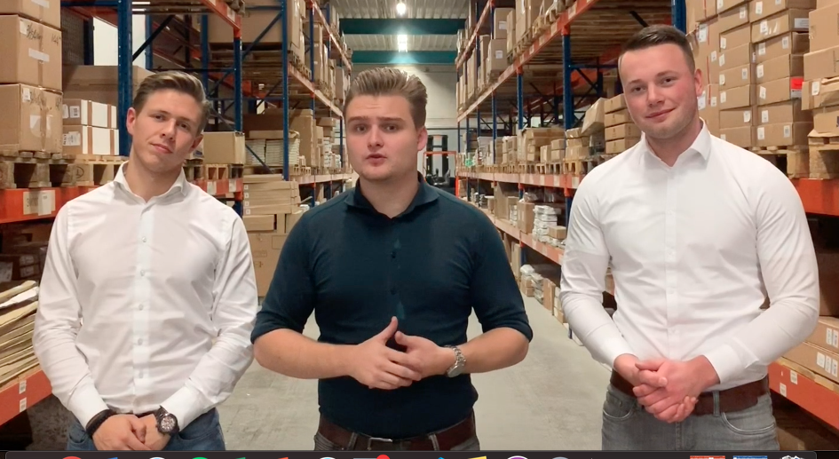
Reflectie op mijzelf
Ook als ik terugkijk op mijn eigen functioneren kan ik stellen dat ik heel erg mijn best gedaan heb om iets moois neer te zetten. Tot op de laatste dagen zijn we druk geweest met dingen regelen, afspraken maken, puntjes op de i zetten en iedereen bedanken. Daarnaast heb ik mijn netwerk mooi uitgebreid en heb ik veel gezien binnen andere bedrijven. De opdracht zelf lag mij ook heel erg
omdat het zo innovaties is en dus breed kan worden toegepast. Ik heb deze periode als erg leerzaam en leuk ervaren. Ik vond het dan ook het beste (samen met de workshops van gastsprekers) wat de minor deze periode te bieden had en was er erg enthousiast over. Dank daarvoor!
Het eindverslag
Voor ons eindverslag klik hier!
Het 3D-geprinte filter
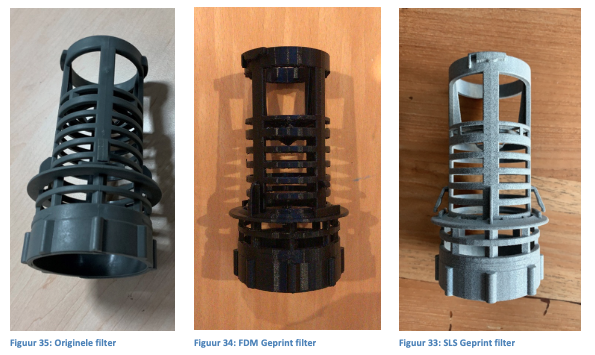
Filmpje voor het Seminar
Promotiemateriaal voor het seminar
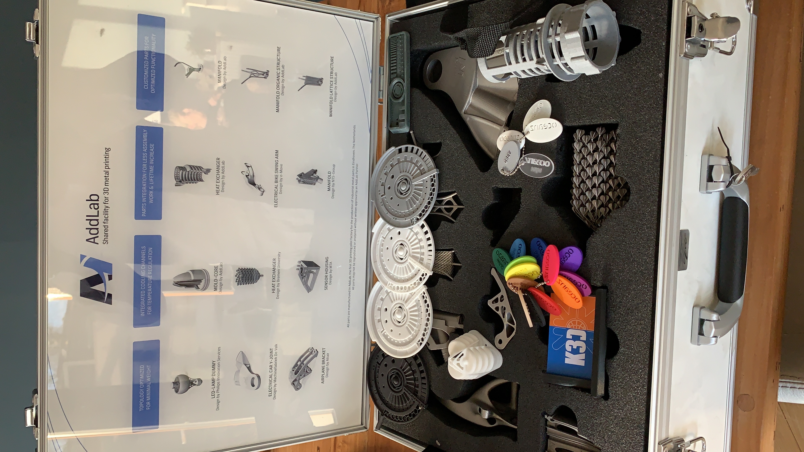
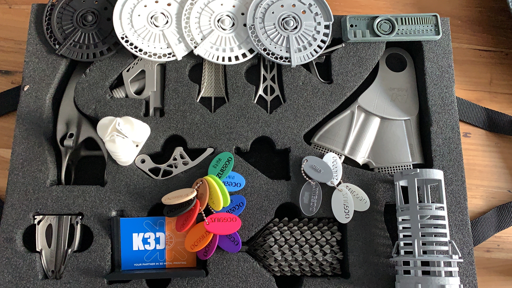
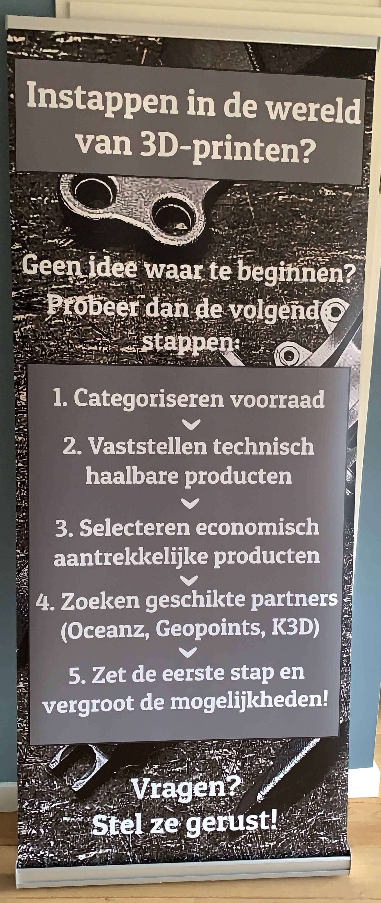